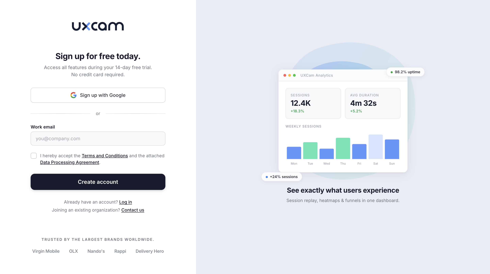
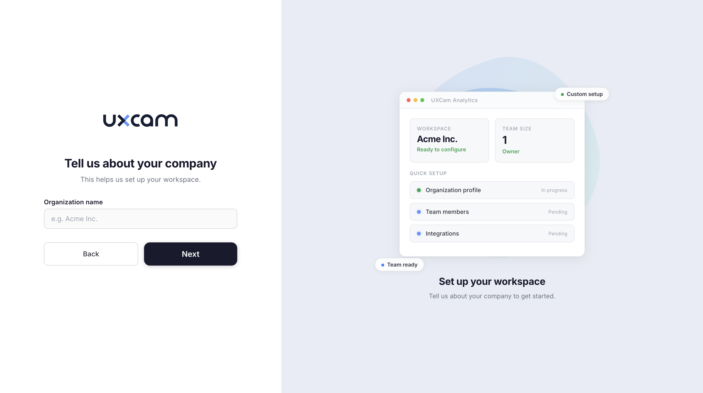
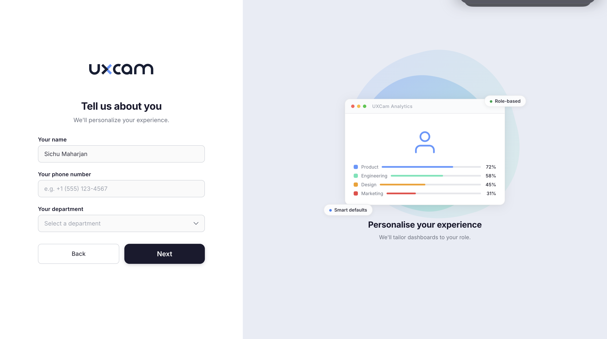
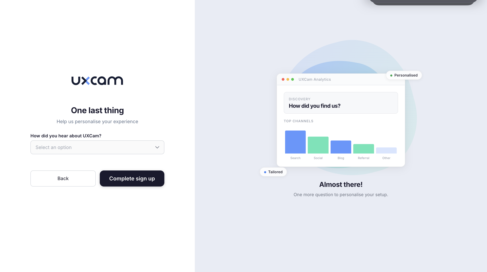
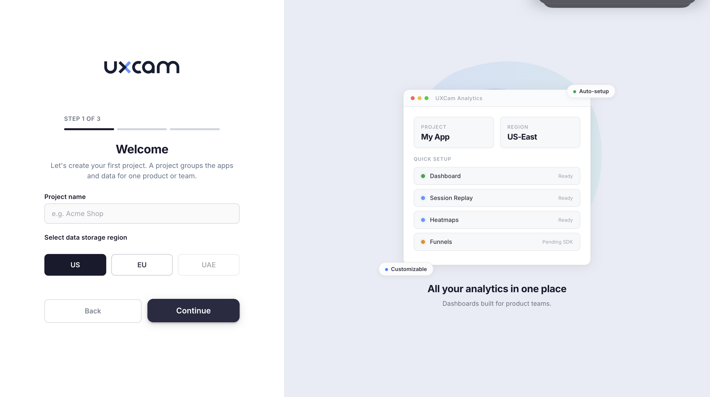
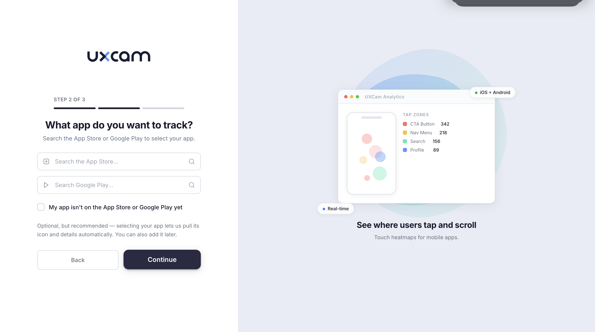
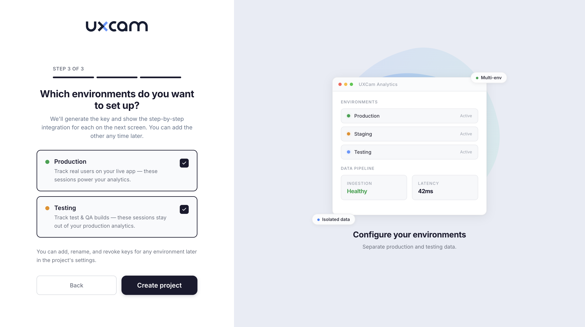
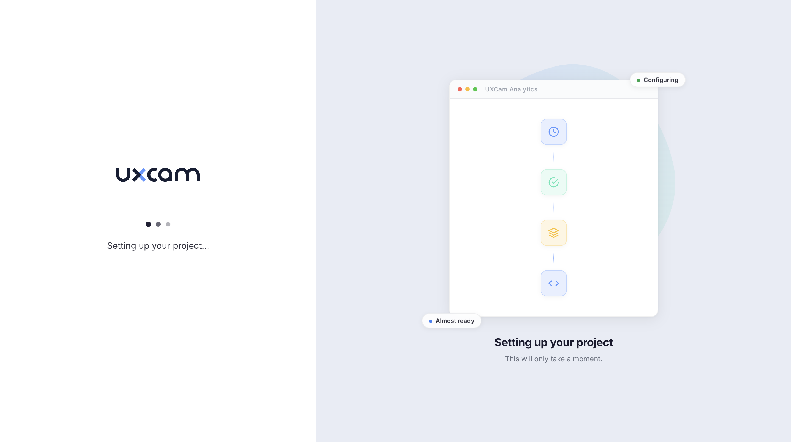

Redesigned signup experience
Rethinking UXCam's entire signup and onboarding flow to reduce friction, build user confidence, and get teams to value faster.

Overview
UXCam's existing signup flow was functional but generic. Users created an account, landed in an empty dashboard, and were left to figure things out on their own. The redesign introduced a guided, multi-step onboarding that collects the right information at the right time and gives users a clear sense of progress toward their first project.
The Challenge
The old signup experience had several problems driving drop-off:
- No progressive onboarding. Users were dumped into a blank dashboard after signup
- Critical setup steps like project creation and SDK integration were buried in settings
- Users had no visibility into what the product would look like once configured
- No personalization. Every user got the same default experience regardless of role


Design Approach
The core design decision was the split-screen layout. The left side collects information through simple, focused forms. The right side shows a contextual preview that evolves with each step, giving users a live sense of what they're building toward.
Each preview is specific to the step. The signup page shows session and duration metrics. The company step shows workspace configuration progress. The profile step shows role-based dashboard breakdowns. This reduces anxiety and builds confidence that the setup is going somewhere meaningful.

Project Setup Flow
After account creation, users move into a three-step project setup wizard. This is where the product becomes real. Users name their project, choose a data region, connect their app, and configure environments, all within a guided flow with clear progress indicators.




Outcome
The redesigned signup flow reduced onboarding friction by giving users clear direction at every step. The contextual preview pattern built user confidence and reduced the perceived complexity of setup. The three-step project wizard made what was previously a buried settings task into a natural continuation of the signup experience.